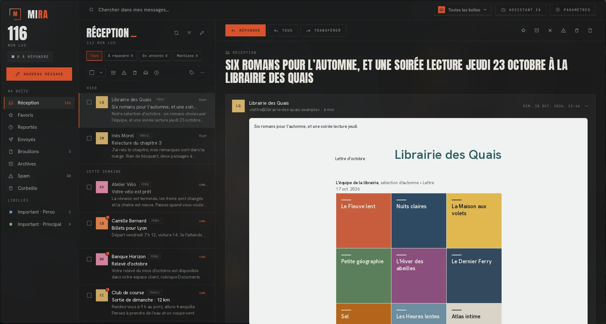

MIRA lit et envoie vos mails
Sur Linux et sur Android. Gratuit, soigné, et pas coincé dans un navigateur.

Trop austères.
Payants.
Coincés dans un navigateur.
Je l'ai faite parce que les autres ne me plaisaient pas.
J'ai cherché un client mail pour Linux. Ceux que j'ai trouvés étaient trop austères, payants, ou coincés dans un navigateur. Aucun ne me donnait envie d'ouvrir ma boîte.
MIRA est le client que je voulais utiliser : une interface sombre et nette, des courriels lisibles, et votre courrier chez vous, sur votre machine.
Tout ce qu'il faut pour lire, écrire et ranger.
- Instantané
- MIRA garde une copie de votre courrier sur votre ordinateur. Les messages s'ouvrent tout de suite, sans attendre le réseau.
- Hors ligne
- Lisez, répondez, archivez et classez sans connexion. Tout part et se synchronise au retour du réseau.
- Privé
- Votre courrier reste sur votre machine. Les images distantes et les pisteurs sont bloqués jusqu'à ce que vous les autorisiez.
- Tous vos comptes
- Gmail, Outlook, Yahoo ou tout compte mail standard. Passez de l'un à l'autre, ou lisez-les ensemble dans une seule boîte de réception.
- Recherche
- Une recherche rapide dans tous vos messages, avec des filtres : non lus, favoris, pièces jointes, expéditeur, période, compte et libellé.
- Libellés locaux
- Vos libellés valent pour tous vos comptes et ne sont jamais envoyés au serveur.
- À votre goût
- Thème clair ou sombre, couleur principale au choix, français et anglais, raccourcis clavier.
Télécharger MIRA
Gratuit et libre, sous licence MIT. Choisissez votre système.
Linux
Un paquet pour chaque famille de distributions.
- AppImage
- deb
- rpm
- Flatpak
- Snap
- Arch
Android
L'application en APK, pour téléphones ARM 64 bits et x86 64 bits.
- APK